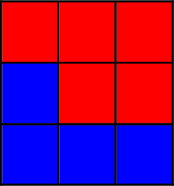
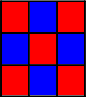
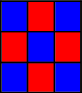
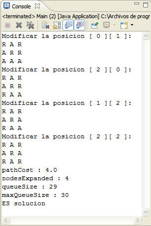
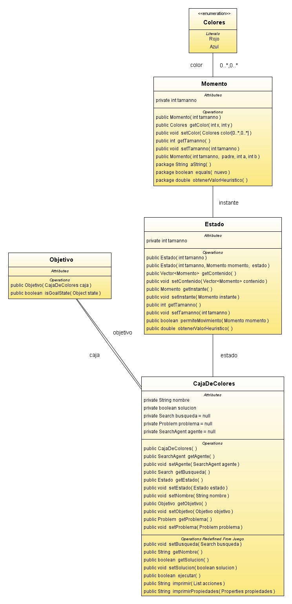

| Caja de colores o Rejilla |
Disponemos de un tablero N x N en cuyas casillas pueden haber 2 tipos de valores, en este caso, los colores Rojo y Azul, quedando así representados los estados  El objetivo del juego consiste en modificar los colores de las casillas en las que sean necesarias para obtener un tablero cuyas casillas adyacentes sean diferentes, a través de los diferentes operadores, cada uno referido a una casilla en concreto, que modifica el color que posea dicha casilla.   Objetivos
El objetivo del juego consiste en conseguir que las casillas adyacentes tengan valores diferentes, por lo que la medida heurística disminuye según disminuye el número de parejas de casillas adyacentes con valores iguales. h'(n) = Número de parejas de casillas adyacentes con el mismo valor (vertical, horizontal y/o diagonal)
Los operadores solo pueden aplicarse una vez.
Algoritmo GreedyBestFirstSearch o Voraz: Técnica que en cada paso trata de situarse lo más cerca posible del objetivo. f'(n) = h'(n): Representa el coste mínimo para llegar desde n hasta un nodo objetivo por el camino más corto, siendo h'(n) = 0, para los nodos objetivos. Utilizamos este algoritmo, ya que este juego genera un amplio espacio de estados por lo que una búsqueda desinformada conllevaría una eficiencia nula o cuestionable, por el contrario, el algoritmo de búsqueda voraz procura en cada paso acercarse lo mas posible al objetivo de forma efectiva, generando un mínimo número de expansiones. 
Mediante la representación total del tablero, conseguimos estar informados de todos los datos del mismo, lo que resulta muy conveniente, sin suponer un coste elevado para el traspaso de información entre los estados. Estado ( tablero[ 3 ] [ 3 ] ) tablero[x][y] = Rojo ˇ Azul [ Rojo/Azul Rojo/Azul Rojo/Azul ] |
| Diagrama UML |
A continuacion se expone el diagrama uml de este juego para aportar informacion adicional sobre su implementacion.  |